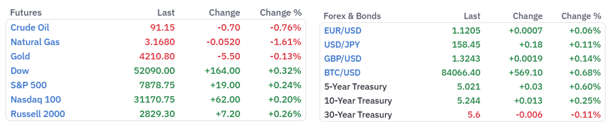
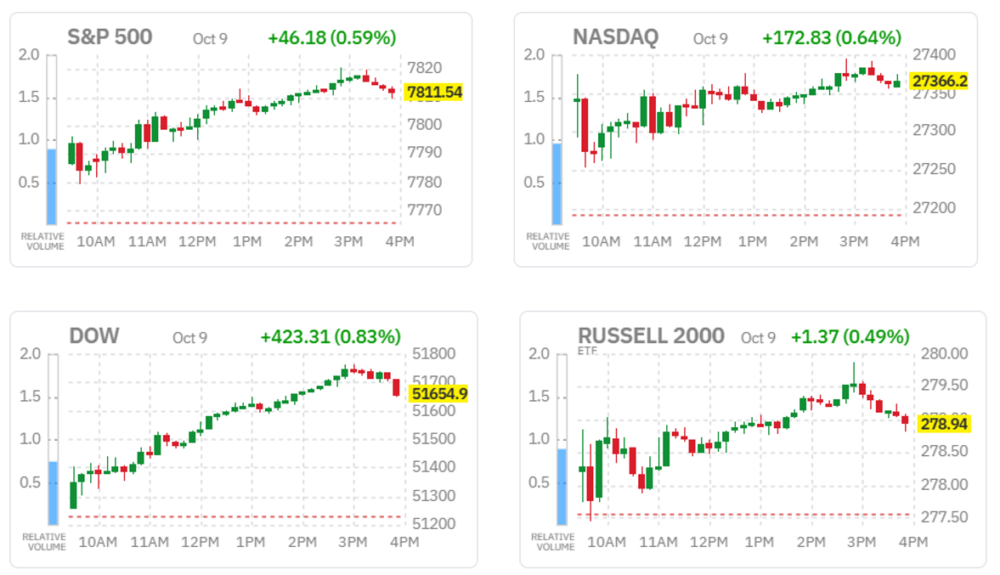
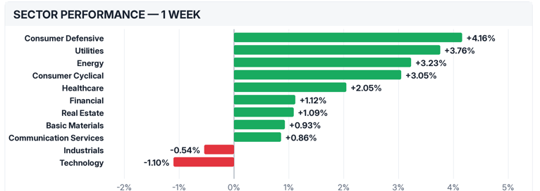
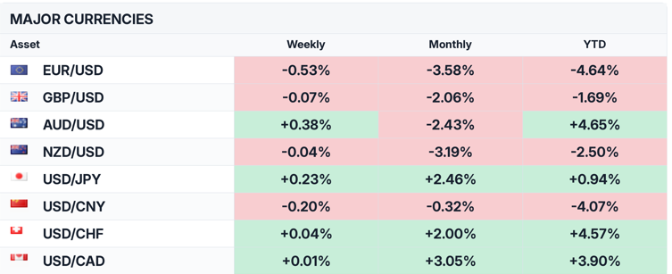
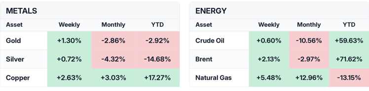
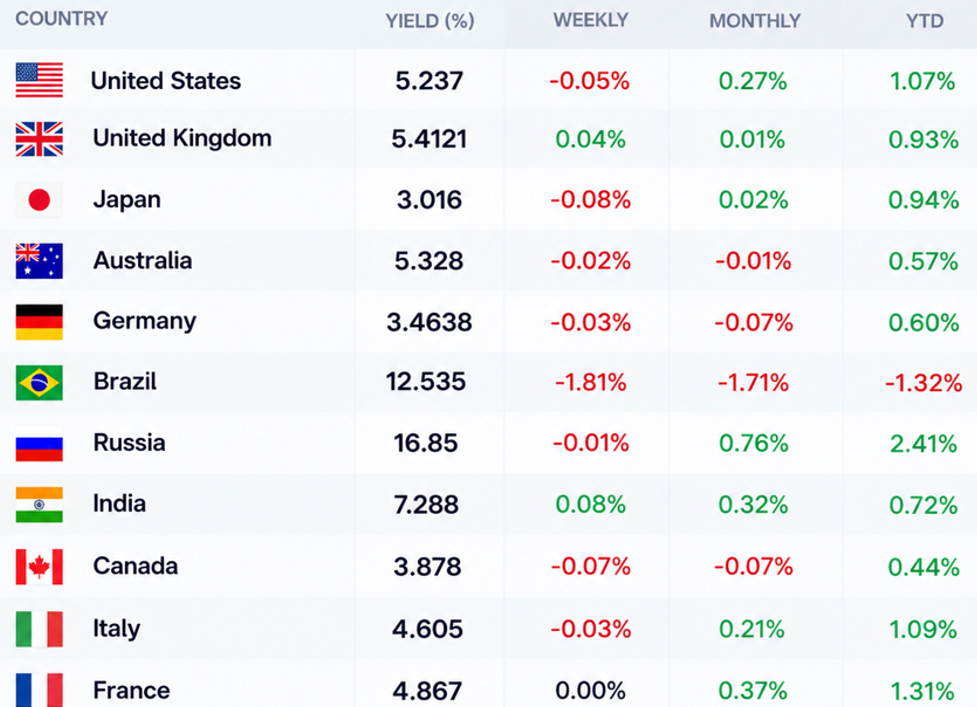

What you need to know this week
Key takeaways
Global Markets Navigate Inflation Risks, Geopolitical Tensions and Technology Volatility
Global financial markets entered the new week balancing renewed optimism in equities against persistent inflationary pressures, geopolitical uncertainty and expectations of further monetary tightening.
Wall Street ended Friday higher, with the Nasdaq Composite and Dow Jones gaining 0.64% and 0.83%, respectively, as technology stocks rebounded from earlier losses. However, concerns over artificial intelligence investment returns, weaker iPhone demand and growing competition in telecommunications continued to weigh on sentiment.
In currency markets, the euro recovered modestly after touching a 17-month low, although France’s fiscal challenges and elevated borrowing costs continued to undermine confidence. Sterling also rebounded, while the Canadian dollar remained under pressure following disappointing employment figures.
Gold attracted renewed buying interest as easing oil prices, softer Treasury yields and a weaker US dollar provided support. Nevertheless, expectations of another Federal Reserve rate increase before year-end limited its upward momentum.
Government bond markets remained sensitive to inflation risks and central bank policy expectations. The US 10-year Treasury yield stood at 5.26%, while French and British borrowing costs remained historically elevated amid fiscal and monetary policy concerns.
Looking ahead, investors will closely monitor third-quarter corporate earnings, geopolitical developments, energy prices and central bank signals. These factors are likely to determine whether the recent market recovery can extend or whether persistent inflation and elevated borrowing costs will trigger renewed volatility.

U.S Equities
Wall Street Rebounds as Technology Stocks Recover and Oil Prices Ease
Wall Street's major indexes advanced on Friday, with the Nasdaq Composite and Dow Jones Industrial Average posting weekly gains as technology stocks recovered and easing oil prices helped improve investor sentiment.
The Nasdaq Composite rose 172.83 points, or 0.64%, to close at 27,366.17, while the Dow Jones Industrial Average gained 423.54 points, or 0.83%, to finish at 51,655.18.
The rebound followed a technology-led sell-off earlier in the week, supported by renewed buying interest in major technology companies and reduced concerns over potential Middle East oil supply disruptions.
Technology Giants Lead the Recovery
Megacap technology stocks provided significant support to the broader market, reversing part of Thursday's losses.
Tesla advanced 1.8%, Nvidia gained 1.5%, and Microsoft climbed 1.2%, reflecting renewed investor appetite for technology shares despite persistent concerns surrounding elevated valuations and the sustainability of artificial intelligence investment.
Semiconductor stocks also recovered following sharp declines in the previous session, as investors reassessed the outlook for AI-related spending ahead of the third-quarter earnings season.
OpenAI Revenue Concerns Raise Questions About AI Investment Returns
Investor scrutiny of the artificial intelligence sector intensified following reports suggesting that OpenAI's annualized revenue was running approximately $20 billion below earlier expectations.
According to the reports, OpenAI's annualized revenue reached approximately $50 billion by the end of September, although continued expansion in enterprise demand could potentially lift that figure to $70 billion or more by December.The developments have renewed debate over whether the rapid growth in AI infrastructure spending can translate into sustainable revenue growth and attractive investment returns.
Despite these concerns, expectations for strong third-quarter earnings from major technology companies continue to provide support to the sector.
SpaceX Spectrum Deal Triggers Sharp Sell-Off in Telecom Stocks
Telecommunications stocks came under substantial selling pressure after SpaceX agreed to acquire a nationwide portfolio of low-band wireless spectrum, potentially strengthening its Starlink mobile connectivity services and intensifying competition with established U.S. carriers.
SpaceX shares advanced 3.2%, while traditional telecommunications operators suffered significant losses:
- T-Mobile: −9.1%
- AT&T: −7.4%
- Verizon: −6.3%
The sharp declines reflected growing concerns that satellite-based connectivity could challenge conventional mobile network operators and reshape the competitive landscape of the U.S. telecommunications industry. In contrast, U.S. mobile tower stocks advanced after Bernstein analysts suggested that the spectrum acquisition could preserve the possibility of SpaceX developing a terrestrial network infrastructure.
The contrasting performance highlighted investors' expectations of a potential structural shift in the telecommunications sector.

Apple Faces Pressure Over Weaker iPhone Demand
Apple shares declined following a Nikkei report indicating that the company had reduced orders for its iPhone 18 lineup amid weaker-than-expected demand.
The development added to concerns surrounding consumer electronics spending and the outlook for smartphone sales, even as the broader technology sector recovered.
Delta Air Lines Cuts Profit Outlook as Fuel Costs Rise
In the airline sector, Delta Air Lines lowered its profit forecast as rising fuel expenses continued to weigh on operating margins.
Although stronger ticket prices provided some support to revenue, they were insufficient to fully offset higher fuel costs.
Delta shares declined following the announcement, highlighting the vulnerability of airline profitability to fluctuations in energy prices.

Market Outlook: Technology Earnings and Energy Prices Remain Key Drivers
Friday's rebound demonstrated the resilience of U.S. equities, particularly technology stocks, despite growing questions surrounding AI valuations and investment returns.
Looking ahead, third-quarter corporate earnings, developments in AI-related spending, oil price movements, and geopolitical tensions in the Middle East are likely to remain central to market direction.
While easing energy prices may provide near-term relief to inflation expectations and corporate margins, investors will increasingly look for evidence that strong earnings growth can justify elevated equity valuations.
Forex & Commodities
EUR/USD The euro rebounded above $1.12 after hitting a 17-month low of $1.1161 earlier this week, supported by stabilizing French bond markets and easing energy prices and US Treasury yields, which weakened the dollar’s rally.
However, the common currency remained on track for a fifth consecutive weekly decline, with cumulative losses of around 3% against the dollar, as investors weighed France’s record-high debt and the political challenges of implementing budget cuts against a resilient US economy and stronger dollar.
Meanwhile, Brent crude retreated from its recent rally after US President Donald Trump said Washington would not launch an attack on Iran before the November midterm congressional elections, citing productive talks aimed at ending the conflict. The easing in oil prices prompted traders to scale back expectations for central bank rate hikes, with the ECB deposit rate now priced to rise from 2.50% currently to 2.72% by December and 3.20% by late 2027.
Key Technical Levels to Watch
EUR/USD remains bearish on the daily chart, trading below the 100-day SMA and the Bollinger Bands’ 20-day middle line. The RSI (14), near 27, signals oversold conditions that could slow the decline, though a reversal is not yet confirmed.
Immediate support lies near 1.1125, at the lower Bollinger Band. Resistance stands at 1.1345, followed by 1.1490 and 1.1560. A recovery above these levels would help ease the bearish bias.
Over the past month, the Euro US Dollar Exchange Rate - EUR/USD has weakened 3.58%, and is down by 3.63% over the last 12 months.
GBP/USD Sterling rebounded from three-month lows to trade around $1.324, supported by easing oil prices and a stabilization in global bond markets that boosted risk appetite, as investors also weighed hawkish remarks from Bank of England policymakers.
Brent retreated after US President Donald Trump ruled out an attack on Iran before the November midterm elections, citing productive talks aimed at ending the conflict. Meanwhile, BoE Chief Economist Huw Pill stressed the need to keep inflation under control, while MPC member Megan Greene warned that UK wage growth could reach around 3.5% in 2027, potentially sustaining inflationary pressures and increasing the need for further rate hikes.
Governor Andrew Bailey also reiterated the importance of bringing inflation down. Markets are pricing in a BoE rate hike in November, with the Bank remaining the only major central bank yet to begin tightening monetary policy in response to inflationary pressures stemming from the US-Iran war.
Key Resistance Levels Shape the Technical Outlook
On the topside, initial resistance level is located at the 20-day Bollinger middle band at 1.3280. A deisive break above this level could pave the way to h the 100-day simple moving average at 1.3400, en route to the upper boundary Bollinger band near 1.3432 forming a broader cap if buyers attempt a rebound.
On the downside, the next notable support level emerges at the October 1 low of 1.3180. Further south, the next contention level is seen at the lower limit of Bollinger band around 1.3130, where a clear break would open the door to a deeper slide within the broader corrective phase.
Over the past month, the British Pound has weakened 2.06%, and is down by 0.98% over the last 12 months.

USD/CAD The Canadian dollar weakened toward 1.43 per US dollar in October, the lowest in 19 months, as week labor data strengthened bets that the Bank of Canada will refrain from delivering a rate hike.
Employment fell by 68,300, missing expectations for a 7,000 increase, while the unemployment rate edged up 0.1 percentage point to 6.5%. Recent data also pointed to a cooling economy. Real GDP rose 0.2% in August, as gains in mining and quarrying and retail trade partly offset a decline in oil and gas extraction. GDP was essentially unchanged in July, ending a three-month growth streak. Although August’s result matched expectations, it highlighted a weaker start to the third quarter.
Meanwhile, uncertainty over US-Canada trade ties persisted after US President Donald Trump said Canada had been difficult to deal with, casting doubt over the prospects for a new trade deal.
Key Resistance and Support Levels for USD/CAD
A sustained move above 1.4300 would reinforce the bullish outlook and open the way for further gains. Initial support lies at 1.4200–1.4210, while a deeper pullback toward 1.4150 would still keep the broader uptrend intact.
- Over the past month, the Canadian Dollar has weakened 3.05%, and is down by 1.77% over the last 12 months.
Gold attracted buyers for the third consecutive session, reaching its highest level in more than a week at the start of the new trading week, although the upward momentum remains limited. The precious metal found support from a softer US Dollar and a modest retreat in US Treasury yields from multi-year highs. Meanwhile, declining crude oil prices, driven by optimism surrounding a potential Russia-Ukraine energy ceasefire agreement, have eased concerns over global fuel shortages and inflationary pressures, providing additional support for bullion.
On the monetary policy front, investors have largely ruled out another Federal Reserve (Fed) interest rate hike at the late-October meeting, while expectations for a 25-basis-point increase in December remain elevated. According to CME Group's FedWatch Tool, markets are pricing in approximately an 85% probability of another rate hike before year-end. These expectations were reinforced by the September FOMC meeting minutes, released last Wednesday, which highlighted policymakers' continued concerns over persistent inflation and their willingness to maintain a restrictive monetary policy stance.
Nevertheless, the Fed's hawkish outlook continues to limit the upside potential for the non-yielding metal, as expectations of further monetary tightening could support US Treasury yields and the Dollar. At the same time, ongoing tensions between the United States and Iran remain a key source of geopolitical uncertainty, potentially sustaining safe-haven demand for gold while limiting the Dollar's downside.
Key Support and Resistance Levels for Gold
A sustained break above $4,215–$4,220 could pave the way for further gains toward $4,303 and $4,378, followed by $4,452, $4,558 and $4,693.
On the downside, initial support stands at $4,100, followed by $4,063. A break below these levels could revive bearish pressure and push gold below the $4,000 psychological mark.
- Over the past month, Gold's price has fallen 2.63%, but it is still 1.83% higher than a year ago

Central Banks News and Fixed Income
U.S. Treasury yields The yield on the benchmark US 10-year Treasury note edged higher to 5.26% on Friday, following a volatile session on Thursday that saw yields retreat by 6 basis points from their highest level since 2002. Despite Friday's modest recovery, the 10-year yield declined by approximately 5 basis points over the week.
Investors continued to monitor geopolitical developments in the Middle East and their potential impact on energy prices and inflation. Oil prices eased after US President Donald Trump pledged to refrain from launching attacks against Iran until after the midterm elections, helping alleviate some concerns over energy supply disruptions and inflationary pressures.
Nevertheless, persistent inflation risks reinforced expectations that the Federal Reserve (Fed) may need to maintain elevated interest rates for longer. Markets were pricing in approximately an 81% probability of the Fed leaving rates unchanged at its October meeting, while the likelihood of a 25-basis-point rate hike in December stood at around 69%.
France 10-Year Government Bond Yield France’s 10-year OAT yield eased to 4.85%, retreating slightly from a more than two-decade high, as markets scaled back expectations for European Central Bank tightening following a stall in the oil rally after US President Donald Trump said Washington would not attack Iran before the November midterm elections. Money markets now price the ECB deposit rate rising from 2.50% currently to 2.72% by December and 3.20% by late 2027.
Before the recent widening in bond spreads, investors had anticipated roughly one additional rate hike in early 2027. French bonds remain under pressure from expectations of higher ECB rates and political uncertainty ahead of the 2027 presidential election, which have heightened concerns over France’s ability to rein in its public finances. The spread between French OATs and German Bunds narrowed slightly this week to around 135 basis points, down from 159 bps last Friday, its widest level since November 2011.
The UK 10-year government bond (gilt) UK 10-year gilt yields remained above 5.4%, close to a recent 19-year high, as investors weighed easing oil prices against hawkish remarks from Bank of England policymakers. Brent crude retreated as Middle East supply concerns eased after US President Donald Trump ruled out an attack on Iran before the November midterm elections, citing productive talks to end the conflict. Meanwhile, BoE Chief Economist Huw Pill said central banks must remain focused on controlling inflation, while MPC member Megan Greene warned that UK wage growth could reach around 3.5% in 2027, potentially sustaining inflationary pressures and increasing the need for further rate hikes. Governor Andrew Bailey also stressed that central banks must remain focused on bringing inflation down. Markets are pricing in a BoE rate hike in November, as the Bank remains the only major central bank yet to begin tightening monetary policy in response to inflationary pressures stemming from the US-Iran war.
